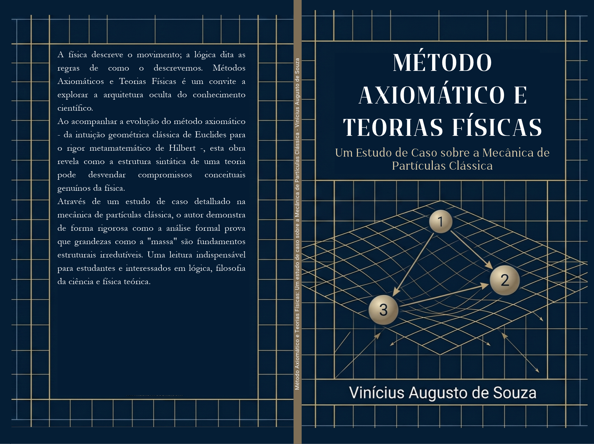

Livro · 2026
Método axiomático e teorias físicas
Um estudo de caso sobre a mecânica de partículas clássica.

ISBN nº 978-65-02-07681-1.
Sobre a obra
Este livro propõe um estudo introdutório e sistemático do método axiomático e de sua aplicação às teorias físicas, em particular, à mecânica de partículas clássica. Partindo de suas origens na tradição filosófica grega, com Aristóteles, e de sua consolidação na geometria de Euclides, o texto acompanha o desenvolvimento histórico e conceitual desse método até sua reformulação moderna, associada ao trabalho de David Hilbert. A parte central do trabalho é dedicada à aplicação do método axiomático à física, por meio da análise de uma axiomatização da mecânica de partículas clássica proposta por McKinsey, Sugar e Suppes. Nesse contexto, são apresentados os termos primitivos do sistema, seus axiomas fundamentais e alguns teoremas derivados, bem como exemplos de metateoremas que evidenciam propriedades estruturais da teoria.
Detalhes
Autor: Vinicius Augusto de Souza
Publicação: 2026
Formato: impresso